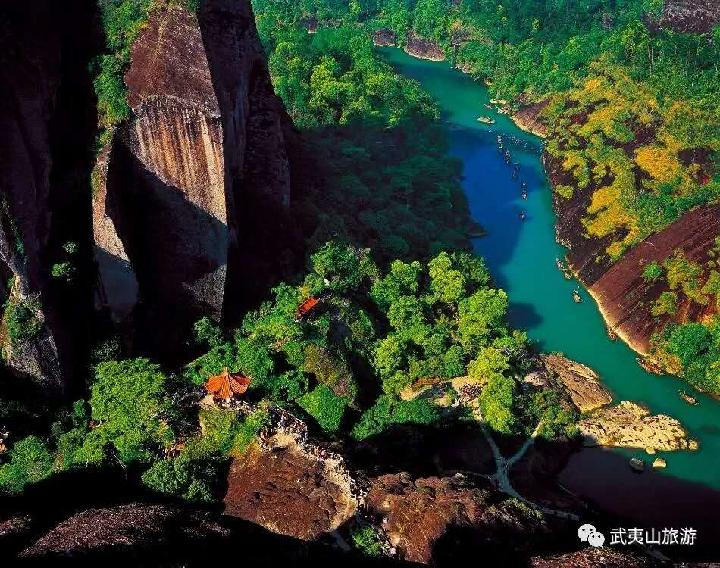

景点介绍
天游峰位于六曲溪北，景区中心海拔408.8米，相对高度215米。是武夷三十六峰中最有代表性的山峰之一，以其秀美的景观闻名于世。每当春冬清晨或雨后乍晴，白茫茫的烟云，弥山漫谷，风吹云荡，起伏不定，犹如大海的波涛，汹涌澎湃。登峰巅，望云海，变幻莫测，宛如置身于九霄云外到天上一游，因此被称为天游峰。著名的旅行家徐霞客登上此峰也曾感慨到：“其不临溪而能尽九曲之胜，此峰固应第一也”。

天游峰景区是武夷山山与水、自然与文化结合最完美的景区，位于整个武夷山风景区的中心，面积约4平方公里，主要景点包括御茶园、天柱峰、云窝、隐屏峰、晒布岩、水月亭、茶洞、天游峰、一览亭、天游观等。除了迷人的自然风光之外，它还是一道难得的文化景观，这里有茶园，有书院，还有摩崖石刻，体现着武夷山自然遗产与文化遗产的完美结合。
注意事项：
1.登山鞋应选择轻便的运动鞋、旅游鞋或胶底布鞋，山路高低不平甚至湿滑，路远可以穿厚袜子避免脚上长水泡。
2.中老年人登山，一定要准备一根手杖，走山路时会有帮助。
3.山上气温变化大，山风也大，应带足保暖衣物，山区时晴时雨，雨具也必不可少。